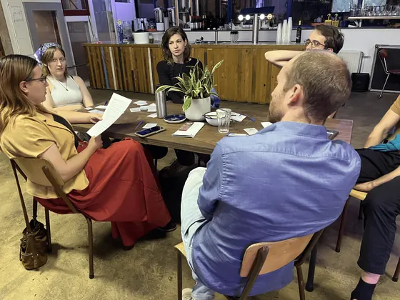
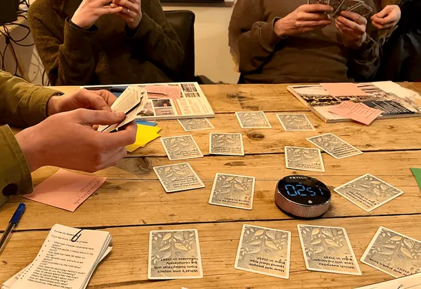
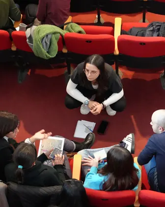
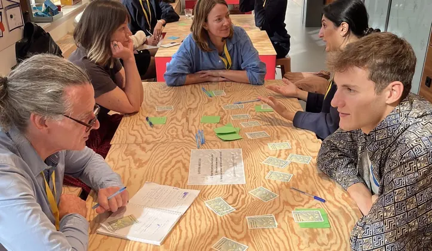
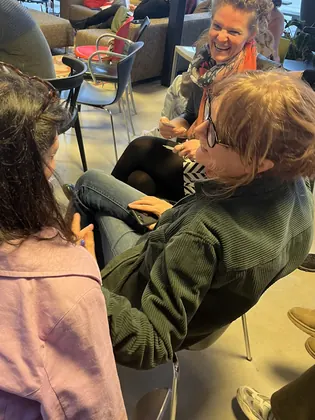
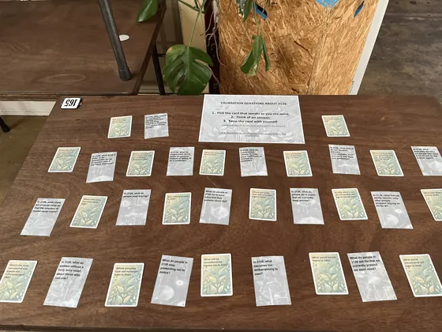
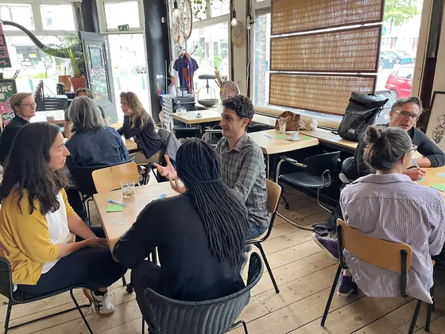

What happens
At 100 years, nobody is the expert.
At that distance there is no right answer to defend. That makes it easier for different roles and levels to speak up, and for harder things to be said.
Timescape cards, some written for your context, place people inside possible futures to explore together. The longer they stay there, the more they notice the assumptions, hopes and worries they carry with them, and how differently their colleagues see the same thing. Then the team comes back to its subject with new questions.
Some of the themes
- Amortality
- Customer support
- Android rights
- Leadership
- Soil
- Mars terraforming
- The meaning of work
- Logistics and humanoid robots
- Money
- Challenging AI inevitability
- The university of the future
- New social contracts
- Food
- Consciousness upload
- Climate restoration
And themes written specifically around your sector.











